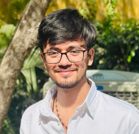

Khush Panchal
Electrical Engineering Portfolio
This professional portfolio presents my academic achievements, technical skills, interdisciplinary projects, leadership experiences, ethical awareness, and professional development as an Electrical Engineering graduate.
It reflects my interest in electrical systems, renewable energy, circuits, automation, power distribution, and practical engineering problem-solving.

Khush Panchal
Electrical Engineering Graduate
Table of Contents
Organized sections with hyperlinks for easy navigation.
Introduction and Learning Philosophy
My academic journey, values, and approach toward Electrical Engineering.
My learning journey in Electrical Engineering has been shaped by curiosity about how electrical energy is generated, transmitted, controlled, and used safely in modern society. Electrical Engineering connects circuit theory, power systems, machines, electronics, control systems, renewable energy, and automation.
My academic philosophy is based on practical understanding, technical discipline, safety awareness, and continuous improvement. I believe that engineering knowledge becomes valuable when it is applied to solve real problems in a reliable, efficient, and ethical way.
The values that guide my work include accuracy in calculations, safety in electrical systems, teamwork, innovation, environmental responsibility, and willingness to keep upgrading technical skills according to industry needs.
Resume / CV
A structured overview of my education, skills, interests, activities, and development.
Education
B.Tech in Electrical Engineering
Pandit Deendayal Energy University
Bachelor’s degree completed in Electrical Engineering.
Work Experience / Training
- Academic laboratory work in circuits, machines, and power systems.
- Project-based learning in electrical design, energy systems, and automation.
- Team-based presentations, technical reports, and experimental documentation.
Job Profile
Electrical Engineering graduate with interest in power systems, renewable energy, electrical maintenance, automation, control systems, and technical documentation.
Areas of Interest
- Power Systems
- Electrical Machines
- Renewable Energy
- Control Systems
- Automation and IoT
Specialization Focus
Electrical power distribution, energy efficiency, solar energy systems, basic circuit design, electrical safety, and automation-based applications.
Technical Skills
- Electrical circuit analysis
- MATLAB/Simulink basics
- Arduino and sensor-based systems
- MS Excel for calculations
- Technical report writing
Soft Skills
- Communication
- Teamwork
- Leadership
- Problem-solving
- Time management
- Adaptability
Certifications & Development
- Workshops and seminars related to electrical systems and renewable energy.
- Online learning in automation, circuit design, and energy management.
- Technical event participation and skill development activities.
Awards & Honors
Recognition areas include project presentation, technical participation, teamwork-based activities, and academic development.
Volunteer & Co-Curricular Activities
- Technical events
- Group presentations
- Seminar participation
- Electrical model and poster preparation
Hobbies
- Exploring new technologies
- Learning electrical tools and software
- Reading about renewable energy
- Creative technical presentations
Contact
Email: khushpanchal2005@gmail.com
LinkedIn: Add later
Location: Gujarat, India
Interdisciplinary Projects and Research
Major project work demonstrating problem-solving across multiple technical fields.
1. Smart Energy Monitoring System
Project Overview: This project combined Electrical Engineering, IoT, sensors, data monitoring, and energy management to track electricity consumption and improve energy awareness.
2. Solar Powered EV Charging Concept
Project Overview: This project integrated renewable energy, electrical design, battery charging, sustainability, and basic cost analysis to study solar-supported EV charging.
3. Home Automation Using Microcontroller
Project Overview: This project connected electronics, embedded systems, sensors, automation, and user convenience to control basic home appliances through a smart system.
Advanced Skill Development and Mastery
Technical, soft, and creative skills developed through academic and project work.
Circuit Design
Prepared basic circuit diagrams and understood electrical connections, load, voltage, and current behavior.
MATLAB / Simulation
Used simulation concepts for basic electrical analysis, system behavior, and performance understanding.
Automation & IoT
Worked with microcontroller logic, sensors, relay switching, and basic automation applications.
Technical Communication
Developed confidence in explaining electrical concepts through presentations, reports, and project discussion.
Collaborative and Leadership Experiences
Team roles, responsibilities, conflict resolution, and contributions.
Technical Team Collaboration
- Worked with team members on electrical projects, presentations, and reports.
- Helped divide tasks such as circuit design, documentation, and presentation work.
- Focused on completing work safely, clearly, and on time.
Leadership and Problem Solving
- Supported team decisions by comparing practical options.
- Encouraged clear communication during group activities.
- Helped solve issues related to wiring, testing, and project explanation.
Global Awareness and Ethical Considerations
How global issues and ethical thinking influence electrical engineering work.
Global Perspective
Electrical Engineering is strongly connected with energy demand, renewable power, climate change, grid reliability, electric mobility, and energy access. Engineers must develop solutions that are efficient, safe, and sustainable.
Case Scenario: A low-cost electrical installation may reduce initial cost, but if safety protection and proper wiring are ignored, it can create serious risk to people and equipment.
Ethical Reflection
Ethical responsibility in electrical work includes safe design, correct rating of devices, proper earthing, honest testing, efficient energy use, and responsibility toward users and the environment.
Personal View: I believe electrical engineering success should be measured by safety, reliability, sustainability, and public benefit.
Professional Aspirations and Development
Career goals, further learning, and continuous improvement strategies.
My professional aspiration is to build a strong career in Electrical Engineering by gaining practical experience in power systems, electrical maintenance, renewable energy, automation, and technical project execution.
For continuous improvement, I plan to learn advanced electrical design software, improve knowledge of industrial automation, attend technical workshops, gain field exposure, and stay updated with safety standards and sustainable energy practices.
Conclusion and Self-Assessment
Summary of learning, self-evaluation, and SWOT analysis.
This portfolio summarizes my academic journey, technical skills, electrical projects, teamwork experiences, ethical thinking, and professional goals. It reflects my growth from learning core electrical concepts to applying them in practical project-based situations.
My self-assessment shows that I have developed good interest in electrical systems, renewable energy, automation, and technical communication. Areas for growth include advanced software mastery, stronger industrial exposure, and deeper practical design knowledge.
Strengths
- Interest in electrical systems
- Good teamwork and communication
- Willingness to learn technical tools
Weaknesses
- Need more industrial exposure
- Need deeper software practice
- Need improvement in advanced design confidence
Opportunities
- Renewable energy sector growth
- Automation and IoT applications
- Electrical maintenance and power system roles
Threats
- Fast-changing technology
- High competition in engineering jobs
- Need for continuous skill upgrading
Testimonial
Recommendation from an academic mentor or professor.
“Khush Panchal has shown sincere interest in Electrical Engineering concepts, technical learning, and project-based activities. His portfolio reflects a positive approach toward practical understanding, teamwork, and professional growth.”